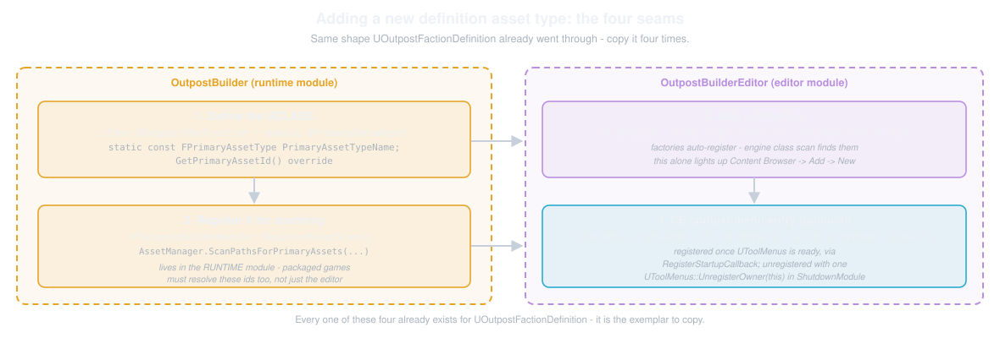
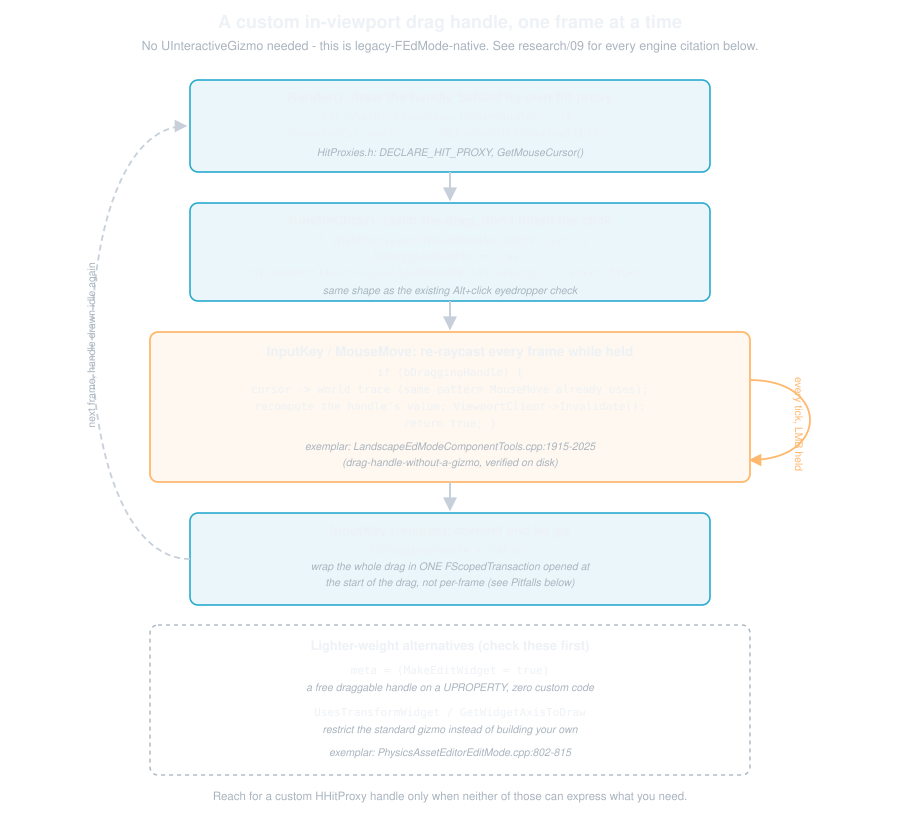

Extending Outpost Builder
This page is meant as a quick reference on extending Outpost Builder: three worked examples of the kind of extension you're most likely to reach for, plus a pitfalls list mined from our own verification history so you don't have to rediscover them the hard way.
Check out Architecture, The UEdMode Deep Dive, Prefabs, and Faction - Identity and Gating for the "what" and "why" behind the systems below. This page assumes you've read those (or the source) and just want to add your own thing.
We're assuming you're comfortable with UEdMode, Slate, UPROPERTY, transactions, and the rest of the editor-extension vocabulary. We won't re-explain engine basics here. What we will do is point at the exact seams this plugin exposes, quote the real code at each one, and tell you where we got burned so you don't have to.
Consuming OutpostBuilder from Another Project
Everything below the fold on this page assumes you're editing the plugin's own source. This section is the other case: you're building a SEPARATE project (or a separate plugin) that depends on OutpostBuilder as an installed dependency and never touches its .uplugin. Five things a downstream project actually reaches for, in the order you'd hit them.
Enable the Plugin and Pick Your Module Dependencies
OutpostBuilder ships two modules, one runtime/editor pair. See Architecture's "Module Split: Runtime vs Editor" for the full why. The short version for a consumer rather than a contributor: OutpostBuilder (Runtime, OUTPOSTBUILDER_API) is what a packaged game links against, and OutpostBuilderEditor (Editor, OUTPOSTBUILDEREDITOR_API) is editor-only tooling that never ships in a cooked build. The registry bake and its listeners live in the editor module.
- Gameplay-only consumer (spawn outposts, read definitions, bind events, subclass an actor or a definition): depend on
OutpostBuilderalone, from any module type (Runtime or Editor). - Editor-tooling consumer (mount or remix the Slate widgets, write your own placement mode): depend on
OutpostBuilderEditortoo, and only from your own Editor-type module, the sameLoadingPhase: "Default"/Type: "Editor"shape this plugin's ownOutpostBuilderEditorentry uses in its.uplugin.
// YourProject/Source/YourEditorModule/YourEditorModule.Build.cs
PrivateDependencyModuleNames.AddRange(new string[]
{
"OutpostBuilder", // runtime types: AOutpost, UOutpostDefinition, UOutpostEventSubsystem, ...
"OutpostBuilderEditor", // editor-only: the 13 SOutpost* widgets, FOutpostBuilderWidgetContext, FOutpostPaletteModel
});
Once either is listed (Public or Private, since either propagates the include), #include "OutpostBuilder/Outpost.h" and #include "OutpostBuilderEditor/SOutpostBuildingsBrowser.h" just work with no further Build.cs changes on your side: both modules already declare their own Source root as a PublicIncludePath precisely so a "collapsed" (no Public/Private split) module's headers are reachable by full plugin-Source-root-relative paths from any dependent.
OutpostBuilder.Build.cs's own comment spells this out ("PUBLIC so it propagates to dependent modules (OutpostBuilderEditor)"), and OutpostBuilderEditor.Build.cs does the identical thing for itself.
The linkable symbols at each of those headers (classes, statics) carry the matching OUTPOSTBUILDER_API/OUTPOSTBUILDEREDITOR_API export mark, which is the piece that actually needed doing. See "Extending the Editor UI" below for exactly which editor-module surfaces are marked and which deliberately aren't.
Bind the Runtime Event Subsystem
UOutpostEventSubsystem (OutpostBuilder/Source/OutpostBuilder/Core/OutpostEventSubsystem.h) is the intended bind-and-go seam for reacting to outpost/plot/faction changes without forking the plugin: three events (OnOutpostStamped, OnPlotAssigned, OnFactionChanged), each with a BlueprintAssignable dynamic delegate AND a plain native multicast "Native" twin firing from the same broadcast call.
Read the class's own doc comment in full before binding. It covers three things every subscriber needs to know and this page won't repeat: the EDITOR VS GAME split (an editor-authoring action broadcasts on the level-editor world's instance, never on a PIE/packaged world's), that undo/redo does NOT re-fire these, and the exact firing order per entry point.
C++ (native twin: AddUObject/AddLambda/AddRaw, whichever binder shape your class already uses):
if (UOutpostEventSubsystem* Events = UOutpostEventSubsystem::Get(GetWorld()))
{
Events->OnOutpostStampedNative.AddUObject(this, &UYourClass::HandleOutpostStamped);
Events->OnPlotAssignedNative.AddUObject(this, &UYourClass::HandlePlotAssigned);
Events->OnFactionChangedNative.AddUObject(this, &UYourClass::HandleFactionChanged);
}
Blueprint: UOutpostEventSubsystem is a UWorldSubsystem, so it gets the engine's usual auto-generated Get Outpost Event Subsystem node (subsystem classes are exposed to the subsystem-fetch nodes regardless of BlueprintType). Drag off a World Context, get the subsystem, then Bind Event to On Outpost Stamped (etc.) on the result, the same pattern as binding to any other BlueprintAssignable multicast delegate.
Subclass a Definition Asset
Both definition types (UOutpostDefinition, UOutpostBuildingDefinition) are meant to be subclassed, natively or in Blueprint. Add your own fields, keep everything the plugin already does.
The full contract (why you must never override GetPrimaryAssetId, and why leaving it alone is not a limitation but the whole point) is documented once, on each class, as the "SUBCLASSING CONTRACT" doc comment on GetPrimaryAssetId() in OutpostDefinition.h / OutpostBuildingDefinition.h. Read it there rather than here. This page won't restate it.
The short version: a subclass is an ORDINARY MEMBER of its parent's primary asset type, so the plugin's existing scan, palette, and picker filters all find your subclass's instances with zero code on your side.
// Your own module - native or Blueprint, either way:
UCLASS()
class UMyOutpostBuildingDefinition : public UOutpostBuildingDefinition
{
GENERATED_BODY()
public:
// Add your own fields here. Do NOT override GetPrimaryAssetId() - see the SUBCLASSING CONTRACT
// comment on the base class for why leaving it alone is required, not just simplest.
UPROPERTY(EditAnywhere, Category = "Your Project")
FGameplayTag YourCustomTag;
};
Swap In Your Own Actor Classes
Covered in full already, further down this same page under "Override a Spawned Actor Class". The mechanism (four TSubclassOf<> fields on UOutpostBuilderSettingsAsset's Actors category, resolved through UOutpostRuntimeSettings::GetOutpostClass/GetPlotClass/GetVolumeClass/GetOverheadCameraClass) needs no plugin-side code from a downstream project at all: point the settings asset at your subclass and every one of the plugin's 11 spawn sites picks it up.
Extend the Editor UI
If you want your own toolkit, panel, or placement mode to look and behave like this one (or to literally reuse pieces of it), mount or remix the 14 reusable SOutpost* widgets rather than starting from a blank SCompoundWidget. They're built for exactly this: the exemplar contract is "The Widget-Authoring Recipe" (toolkit.html, SOutpostBuildingsBrowser is the ORIGINAL exemplar it's modeled on).
Every one of the 14 owns its own state, holds no UOutpostBuilderEdMode*/FOutpostBuilderToolkit* anywhere on the class, and reads the editing session only through an injected TSharedPtr<FOutpostBuilderWidgetContext> and/or TSharedPtr<FOutpostPaletteModel>, reporting every world-mutating action back out as a SLATE_EVENT instead of performing it directly.
Because none of them hold a reference to this plugin's toolkit or mode, nothing stops you from SNew-ing one into a completely different panel shell, wiring its SLATE_EVENTs to YOUR OWN handlers instead of FOutpostBuilderToolkit's.
SOutpostSaveFooter deserves a specific callout: this plugin's own editing panel doesn't mount it internally (saving reaches through the in-viewport editing bar's Save button and Ctrl+S instead), but the widget is fully intact and is exactly the worked example the snippet just below mounts. It's an export-only exemplar: reach for it in your own panel the same way regardless.
// Your own FModeToolkit/panel, in your OWN OutpostBuilderEditor-dependent editor module:
TSharedPtr<FOutpostBuilderWidgetContext> YourContext = MakeShared<FOutpostBuilderWidgetContext>();
YourContext->bIsPlayOrSimulateActive = TAttribute<bool>::CreateSP(this, &SYourPanel::IsPlayOrSimulateActive);
YourContext->GetEditingOutpost = FOutpostBuilderWidgetContext::FGetEditingOutpost::CreateSP(this, &SYourPanel::GetEditingOutpost);
// ... fill in whichever fields the widgets you mount actually read - see OutpostBuilderWidgetContext.h
// for the full field list and each one's own doc.
ChildSlot
[
SNew(SOutpostSaveFooter)
.Context(YourContext) // Reads ResolveEditingDefinition through the Context - see the widget's own header for exactly which fields it consumes.
.OnSaveRequested(FSimpleDelegate::CreateSP(this, &SYourPanel::HandleSaveRequested))
];
Not every widget takes a Context. Each header's SLATE_BEGIN_ARGS block is the authority on what it
consumes. SOutpostBuildingsBrowser, for example, takes no Context at all (it browses every building
definition unfiltered); its create hook is also not an FSimpleDelegate. It returns the created asset, so
you bind it with its own type:
.OnCreateBuildingRequested(SOutpostBuildingsBrowser::FOnCreateBuildingRequested::CreateSP(this, &SYourPanel::HandleCreateBuilding))
where your handler returns a UOutpostBuildingDefinition*.
FOutpostPaletteModel follows the same shape if you're mounting anything from the Building-palette complex (SOutpostBuildingPalette, SOutpostPaletteTile, SOutpostPaletteFilterRow, SOutpostPaletteCategoryTabRow, SOutpostAssignRow, SOutpostSelectedBuildingPanel): construct one TSharedRef<FOutpostPaletteModel> yourself (its own header has no toolkit/mode dependency to satisfy beyond GateFactionAttribute, which you bind the same CreateSP way) and hand it to every palette widget you mount, so they all agree on the same entry cache/hot-building/filters the way this plugin's own two mount points do.
What's deliberately NOT part of this seam: UOutpostBuilderEdMode itself carries no OUTPOSTBUILDEREDITOR_API mark and isn't meant to be subclassed or reused.
Mode discovery is engine-side machinery. The asset-editor subsystem sweeps UEdMode CDOs directly, so there's nothing to register and nothing to hook - FEditorModeRegistry, the older registration point a legacy FEdMode needed, doesn't apply to a UEdMode at all.
A downstream project that wants its own full placement UX (viewport ghosts, hit-proxy gizmos, an InputKey state machine) writes its own UEdMode, informed by The UEdMode Deep Dive and Worked Extension 3 below, rather than inheriting this one.
The 13 widgets, the two shared read-model primitives, and FOutpostBuilderToolkit's two public statics (GetPlayBlockedText/GetAssignRefusalText, the shared "why is this refused" wording, exported at the function level since the toolkit class itself isn't) are the intended reuse surface. The mode and the toolkit's own private assembly logic are not.
Worked Extension 1: Add a New Definition Asset Type End to End
Outpost Builder has two definition asset types: UOutpostDefinition and UOutpostBuildingDefinition. (Factions are NOT a definition asset. They're a fixed EOutpostFaction enum, pure identity and building-eligibility gating with no visual effect. See the note at the end of this section if that's the extension you actually came here for.)
UOutpostBuildingDefinition is a clean, minimal example of every seam a new type needs to go through. We'll walk through adding a third type (call it UOutpostXDefinition) by mirroring it step for step.

Step 1: Define the Data Asset
Every definition type is a thin UPrimaryDataAsset subclass. Here's the core of the building definition, abridged. The real header also carries GetEffectiveDisplayName()/MakeDefaultDisplayNameFromAssetName(), the PlotTagQuery/MatchesPlotTags() warn-only tag matrix (covered later on this same page), and BuildingCategory, all elided here for space:
// OutpostBuilder/Source/OutpostBuilder/DataAssets/OutpostBuildingDefinition.h
class AActor;
class UStaticMesh;
/**
* Data asset describing a single placeable building type: its display name, the mesh it renders as,
* the actor asset gameplay spawns for it, and the two things that decide WHERE it may go - the plot
* size it requires and the factions that field it.
*
* WHAT RENDERS: when BuildingActorClass is set, the EDITOR previews the ACTOR - the placement ghost
* and the editor-world plot both mirror its template's static-mesh components (the same collector on
* both sides, so the thing you aim is the thing you get). BuildingMesh is the fallback for a class-less
* building, the palette thumbnail source, and what a plot renders in GAME worlds (gameplay spawns
* the real actor itself there; the plugin never double-renders it).
*/
UCLASS(BlueprintType)
class OUTPOSTBUILDER_API UOutpostBuildingDefinition : public UPrimaryDataAsset
{
GENERATED_BODY()
public:
static const FPrimaryAssetType PrimaryAssetTypeName;
virtual FPrimaryAssetId GetPrimaryAssetId() const override;
UPROPERTY(EditAnywhere, BlueprintReadOnly, Category = "Building")
FText DisplayName;
/**
* The actor asset (e.g. a Blueprint actor) gameplay spawns for this building - and what the EDITOR
* previews when set: the placement ghost and the editor-world plot both mirror this class's
* template (CDO + SCS static-mesh components) into plain components, never a child actor and never
* a spawned instance. Ghost and plot mirror the SAME class through the SAME collector, so one shape
* can't be aimed while another is placed. Game worlds never render from this class (gameplay spawns
* the real actor there).
*/
UPROPERTY(EditAnywhere, BlueprintReadOnly, Category = "Building", meta = (DisplayThumbnail="false"))
TSoftClassPtr<AActor> BuildingActorClass;
/** The building's mesh: what a plot renders in GAME worlds, the palette thumbnail source, and the editor preview/ghost FALLBACK when BuildingActorClass is unset or yields no static-mesh parts. */
UPROPERTY(EditAnywhere, BlueprintReadOnly, Category = "Building")
TSoftObjectPtr<UStaticMesh> BuildingMesh;
/**
* Which plots this building fits, as a gameplay-tag QUERY evaluated against the plot's size tag.
* An EMPTY query fits EVERY plot - the default for newly created buildings. A plot whose tag the
* query rejects gets the DISABLED TREATMENT - the building is offered greyed-out, and one already
* assigned to a now-mismatched plot is never auto-deleted or reassigned; it keeps its plot and
* keeps rendering.
*/
UPROPERTY(EditAnywhere, BlueprintReadOnly, Category = "Building")
FGameplayTagQuery PlotSizeQuery;
/**
* The factions that field this building. EMPTY = supported EVERYWHERE (wildcard) - which is exactly
* what an asset authored before this field existed deserializes to, so no existing content is
* narrowed by the upgrade.
*
* Never test this set directly - call SupportsFaction(), which is the one home of the whole rule
* (the Neutral case is not expressible as a membership test and WILL be got wrong here).
* // ... (TSet-vs-bitmask rationale elided - see the header)
*/
UPROPERTY(EditAnywhere, BlueprintReadOnly, Category = "Building")
TSet<EOutpostFaction> SupportedFactions;
/** THE single home of the faction-eligibility rule ... (Neutral accepts everything; empty = wildcard - see the header). */
UFUNCTION(BlueprintPure, Category = "Building")
bool SupportsFaction(EOutpostFaction OutpostFaction) const;
};
Note: keep the fields data, not behavior. Every bit of logic that resolves or applies this asset (mesh, footprint, whatever your new type carries) lives on the actor that reads it, not on the definition itself. That's the pattern the outpost and building definitions both follow.
SupportsFaction() is one exception, and its size-eligibility twin MatchesPlotSize() (which evaluates PlotSizeQuery, and is elided from the excerpt above) is the other. They earn it: each is a BlueprintPure query over this asset's own field, and exists precisely so the rule can't be re-derived at a call site.
If your new type has a rule that is easy to get subtly wrong and impossible to keep consistent once copied (a defaulted-empty container/query that means "everything", say), put the query on the definition and forbid direct field access in the comment, the way both of those do.
Step 2: Give It a Primary Asset Id
The .cpp is almost nothing. That's the point: GetPrimaryAssetId() is the entire identity contract every other system (the palette, the picker widgets, AllowedTypes meta) relies on.
// OutpostBuilder/Source/OutpostBuilder/DataAssets/OutpostBuildingDefinition.cpp
#include "OutpostBuilder/OutpostBuildingDefinition.h"
const FPrimaryAssetType UOutpostBuildingDefinition::PrimaryAssetTypeName(TEXT("OutpostBuildingDefinition"));
FPrimaryAssetId UOutpostBuildingDefinition::GetPrimaryAssetId() const
{
return FPrimaryAssetId(PrimaryAssetTypeName, GetFName());
}
For your new type, swap in TEXT("OutpostXDefinition") and you're done with this step. Give your own UPROPERTY(meta = (AllowedTypes = "OutpostXDefinition")) references the same free ride the outpost and building ids already get.
Step 3: Register It for Scanning
This is the step it's easiest to get wrong: the scan has to live in the RUNTIME module, not the editor module. A packaged game still needs to resolve FPrimaryAssetIds against real assets, so an editor-module scan would leave the ids unresolvable in a cooked build.
Both load-bearing halves (the ScanPathsForPrimaryAssets call that makes the id resolve, and the SetPrimaryAssetTypeRules call that force-cooks the package) are folded into one templated helper, so a new type can't get one half without the other:
// OutpostBuilder/Source/OutpostBuilder/Core/OutpostBuilderModule.cpp
template <typename T>
static void RegisterOutpostAssetType(UAssetManager& AssetManager)
{
AssetManager.ScanPathsForPrimaryAssets(T::PrimaryAssetTypeName, { TEXT("/Game") }, T::StaticClass(), /*bHasBlueprintClasses=*/false, /*bIsEditorOnly=*/false);
FPrimaryAssetRules AlwaysCookRules;
AlwaysCookRules.CookRule = EPrimaryAssetCookRule::AlwaysCook;
AssetManager.SetPrimaryAssetTypeRules(T::PrimaryAssetTypeName, AlwaysCookRules);
}
// OutpostBuilder/Source/OutpostBuilder/Core/OutpostBuilderModule.cpp
void FOutpostBuilderModule::RegisterAssetScans()
{
UAssetManager& AssetManager = UAssetManager::Get();
// AlwaysCook all three types, scan+cook-rule TOGETHER via RegisterOutpostAssetType (research/12).
// None of these packages is reached by a dependency edge the cooker follows on its own:
// outpost/building definitions are reached ONLY through FPrimaryAssetId (a name pair, not a package
// reference), and the settings asset is reached ONLY through
// UOutpostRuntimeSettings::SettingsAsset - an ini-hosted soft path, which no cooked package
// references either. With the default CookRule=Unknown, a packaged build silently drops them ALL,
// with nothing logged - exactly the footgun the helper closes by construction (no scan without its
// cook rule, and vice versa).
//
// The mesh a plot renders lives one soft-ref indirection inside one of these: an ASSIGNED plot's
// inside its building definition (BuildingMesh), an UNASSIGNED one's inside the settings asset
// (EmptyPlotMesh), and the shared fallback (DefaultPreviewMesh) inside the settings asset too.
// Cooking the carrier package is what makes the cooker follow those soft refs OUT of it - without
// this rule, DefaultPreviewMesh's soft reference is never cooked, and a packaged build silently
// falls back to the engine cube instead of the configured preview mesh.
OutpostBuilder::Module::RegisterOutpostAssetType<UOutpostDefinition>(AssetManager);
OutpostBuilder::Module::RegisterOutpostAssetType<UOutpostBuildingDefinition>(AssetManager);
OutpostBuilder::Module::RegisterOutpostAssetType<UOutpostBuilderSettingsAsset>(AssetManager);
// Pre-warm the configured settings asset (one-shot sync load) so the never-loading per-frame
// resolution (UOutpostBuilderSettingsAsset::Get) starts serving authored values from the first
// frame. This is the site that covers PACKAGED games - the AlwaysCook rule above guarantees the
// asset is in the build; the editor mode's Enter and the host's PostEditChangeProperty re-warm on
// their own schedules.
UOutpostBuilderSettingsAsset::PreWarm();
}
Add ONE line here for your new type (OutpostBuilder::Module::RegisterOutpostAssetType<UOutpostXDefinition>(AssetManager);) alongside the three above. That one call does both load-bearing halves at once: the scan is what makes the id resolve, and the AlwaysCook rule (research/12) is what stops a packaged build from silently dropping the asset.
A type reached only through FPrimaryAssetId is invisible to the cooker's package-dependency walk, so the default CookRule=Unknown drops it with nothing logged. RegisterAssetScans itself runs from StartupModule if UAssetManager::IsInitialized() already, else it's deferred onto the post-engine-init delegate. You don't need to touch that plumbing at all.
One wrinkle worth knowing about even though it doesn't touch this function: the editor module additionally scans whatever folder the settings asset's CreatedDefinitionDirectory points at (FOutpostBuilderEditorModule::ScanConfiguredDefinitionFolder, OutpostBuilderEditorModule.cpp:525), on top of the /Game-only scans above. That only matters for the editor session.
A packaged game still only ever gets the runtime scans here, so a CreatedDefinitionDirectory pointed outside /Game logs a "won't scan in packaged games" warning (and the toolkit's settings view toasts the same warning on edit). Nothing to do for a new type unless you're touching that folder-configuration path yourself.
Step 4: Add a Content Browser Factory
The factory is what puts your type in Content Browser's Add New menu. It's editor-only. It lives in OutpostBuilderEditor:
// OutpostBuilder/Source/OutpostBuilderEditor/Factories/OutpostBuildingDefinitionFactory.h
UCLASS()
class UOutpostBuildingDefinitionFactory : public UFactory
{
GENERATED_BODY()
public:
UOutpostBuildingDefinitionFactory();
virtual UObject* FactoryCreateNew(UClass* InClass, UObject* InParent, FName InName, EObjectFlags Flags, UObject* Context, FFeedbackContext* Warn) override;
virtual FText GetDisplayName() const override;
virtual bool ShouldShowInNewMenu() const override;
};
// OutpostBuilder/Source/OutpostBuilderEditor/Factories/OutpostBuildingDefinitionFactory.cpp
UOutpostBuildingDefinitionFactory::UOutpostBuildingDefinitionFactory()
{
bCreateNew = true;
bEditAfterNew = true;
SupportedClass = UOutpostBuildingDefinition::StaticClass();
}
UObject* UOutpostBuildingDefinitionFactory::FactoryCreateNew(UClass* InClass, UObject* InParent, FName InName, EObjectFlags Flags, UObject* Context, FFeedbackContext* Warn)
{
UOutpostBuildingDefinition* NewDefinition = NewObject<UOutpostBuildingDefinition>(InParent, InClass, InName, Flags);
// Default the display name to the asset name minus its "BD_" prefix (the same rule the panel's
// "+ New Building" path uses), so a content-browser-created building isn't born blank.
// InName is None only for the transient CDO/template create; guard so that path stays unnamed.
if (NewDefinition && !InName.IsNone())
{
NewDefinition->DisplayName = FText::FromString(
UOutpostBuildingDefinition::MakeDefaultDisplayNameFromAssetName(InName.ToString()));
}
return NewDefinition;
}
Copy the header and .cpp verbatim, rename every Building to X, and point SupportedClass at your new type. You don't need to register the factory anywhere. Any UFactory (or UActorFactory) subclass is found by the engine's own reflection-based class scan, the same way UOutpostDefinitionFactory and UOutpostBuildingDefinitionFactory already are.
Being found isn't the same as being offered, though: what actually gates whether your factory shows up is SupportedClass (set in the constructor above) plus ShouldShowInNewMenu() for the Content Browser's Add menu, or CanCreateActorFrom() for a drag-and-drop actor factory like prefabs.html's UActorFactoryOutpostPrefab.
The DisplayName-default block is specific to UOutpostBuildingDefinition's "BD_" naming convention and its MakeDefaultDisplayNameFromAssetName helper. Copy it only if your new type X has an equivalent "effective display name" concept and prefix convention of its own. Otherwise drop it and leave DisplayName for the designer to fill in.
Step 5: Wire It Into the Content Browser Context Menu (Optional)
This step is optional. Do it when your type benefits from an action that acts on the SELECTED asset, the way "Locate Placed Outpost" does for UOutpostDefinition. Here's that registration in full, since it's the only per-class dynamic context menu extension in the plugin right now:
// OutpostBuilder/Source/OutpostBuilderEditor/OutpostBuilderEditorModule.cpp
void FOutpostBuilderEditorModule::RegisterContentBrowserContextMenu()
{
FToolMenuOwnerScoped OwnerScoped(this);
// Per-class dynamic asset context menu; name is composed by the Content Browser as
// "ContentBrowser.AssetContextMenu.<ClassName>" (native class FName, no "U" prefix) -
// verified in ContentBrowserMenuContexts.cpp / AssetContextMenu.cpp. ExtendMenu() creates
// the (unregistered) menu entry on demand, so this works regardless of load order.
UToolMenu* Menu = UToolMenus::Get()->ExtendMenu("ContentBrowser.AssetContextMenu.OutpostDefinition");
if (!Menu)
{
return;
}
FToolMenuSection& Section = Menu->FindOrAddSection("GetAssetActions");
Section.AddDynamicEntry("LocatePlacedOutpost", FNewToolMenuSectionDelegate::CreateLambda([](FToolMenuSection& InSection)
{
// ... resolve UContentBrowserAssetContextMenuContext, add the menu entry, bind its action.
}));
}
For your own type, you'd ExtendMenu("ContentBrowser.AssetContextMenu.OutpostXDefinition") inside the same function (or a sibling one called from the same RegisterStartupCallback) and add your own section entry. You don't need a second startup/shutdown registration. RegisterContentBrowserContextMenu is already deferred correctly via UToolMenus::RegisterStartupCallback in StartupModule. UToolMenus::UnregisterOwner(this) in ShutdownModule tears down every menu extension registered under this module's owner scope, not just this one.
If You Actually Came Here to Add a Faction
Factions aren't a definition asset anymore, so none of the five steps above apply. Adding one means adding a value to EOutpostFaction (OutpostBuilder/OutpostFaction.h, where the shipped Faction1/Faction2/Faction3 values are placeholders meant to be renamed or extended in code) and giving it a display name via the enum's own UMETA(DisplayName = ...).
That's it: no asset, no factory, no picker widget to touch (the identity header's Faction picker is an engine SEnumComboBox constructed once with StaticEnum<EOutpostFaction>() and reading a live TAttribute off it every frame, so a new value picks up automatically with no refresh call needed anywhere), and no color to configure anywhere. A faction has no visual effect at all.
What your new value actually DOES is decided entirely on the building side, per building, through UOutpostBuildingDefinition::SupportedFactions (a TSet<EOutpostFaction>, default empty = every faction). Add your new value to a building's set to restrict it to (among) the factions listed, or leave the set empty/untouched to keep it available to every faction, Neutral included.
See faction-visuals.html for the full eligibility model (SupportsFaction()'s Neutral-always-wins and empty-set-wildcard rules).
If You Actually Came Here to Add a Toolkit Panel Button, or a Whole New Panel Widget
Also not one of the five steps above, and there is no action registry to register into: a proposal for one was REFUTED before it shipped (research/15-l4-action-registry-refutation.md). A button's code lives on the owning WIDGET, not on the toolkit: FOutpostBuilderToolkit is assembly glue over 14 reusable SOutpost* widgets.
See toolkit.html's "The Widget Inventory" and "The Widget-Authoring Recipe" sections for the full picture. The two cases below cover the two things you're likely to actually want.
Adding one button to an EXISTING section is still, end to end, an SButton block plus its Handle*Clicked / Is*Enabled / Get*Tooltip trio, plus a Can*/Do* pair on UOutpostBuilderEdMode if the button acts on the world. It just lives on the owning WIDGET's .h/.cpp now, not a toolkit .cpp.
OutpostBuilderToolkitBuildTab.cpp carries the recipe as an in-file comment ("TO ADD A BUTTON to the editing panel, copy the '+ New Plot' set end to end") pointing at SOutpostPlotsSection.cpp's "+ New Plot" block as the worked example to copy verbatim.
Either way the button itself stays inside the widget's own Construct(). Only the FINAL step, if the button needs to reach UOutpostBuilderEdMode, crosses back into the toolkit as a thin SLATE_EVENT forwarder.
Adding a whole new reusable panel or section means writing a new SOutpost* widget rather than a new toolkit method, following the exemplar contract every current one does:
- It owns its own state, holds no
UOutpostBuilderEdMode*/FOutpostBuilderToolkit*anywhere on the class, and reads the editing session only through an injectedFOutpostBuilderWidgetContext(andFOutpostPaletteModelif it touches the Building palette). - It reports every world-mutating action back out as a
SLATE_EVENTrather than performing it. - It exposes a public
Refresh*()for external triggers to call, or self-refreshes via a registeredFOutpostPaletteModelobserver, for the palette-complex case.
SOutpostBuildingsBrowser is the ORIGINAL exemplar this whole pattern is modeled on. Read its header's class doc first. SOutpostSaveFooter is the smallest, trivial worked example of the pattern end to end.
SOutpostAssignRow/SOutpostBuildingPalette are the worked example for the one documented DEVIATION: a widget that needs a SHARED state instance across two mount points reads/writes an injected model (FOutpostPaletteModel) instead of owning its own copy. See that model's own class doc (OutpostPaletteModel.h) for why.
Once your widget exists, wire it into a panel exactly the way every current mount does: a thin BuildSomething() toolkit method that SNews (or SAssignNews, if the toolkit needs to call a public method on it later) your widget with .Context(WidgetContext) and whatever SLATE_EVENTs it declares, bound via CreateSP to toolkit forwarders.
research/20-extensibility-plan.md is the forward roadmap past this page: a six-dimension review of what the widget decomposition unlocks next (further reusable pieces, safety rails like the OUTPOST_ENSURE_CONTEXT_BOUND Init sweep and FScopedPaletteObserver, and candidate follow-on extraction targets). Read it before proposing a structural change to the panel shape, so you're not rediscovering ground it already covers.
Override a Spawned Actor Class
If all you want is a project-specific subclass of AOutpost, AOutpostPlot, AOutpostVolume, or AOverheadCamera (to add your own components, override a virtual, or just carry extra UPROPERTYs), you don't need to touch a single spawn call site. UOutpostBuilderSettingsAsset's Actors category (runtime section, so it ships in packaged games) holds one TSubclassOf<> per actor type:
// OutpostBuilder/Source/OutpostBuilder/Settings/OutpostBuilderSettingsAsset.h
UPROPERTY(EditAnywhere, Category = "Actors", meta = (AllowAbstract = "false"))
TSubclassOf<AOutpost> OutpostActorClass;
/** Actor class every new AOutpostPlot is spawned as. See OutpostActorClass above. */
UPROPERTY(EditAnywhere, Category = "Actors", meta = (AllowAbstract = "false"))
TSubclassOf<AOutpostPlot> OutpostPlotActorClass;
// ... OutpostVolumeActorClass / OverheadCameraActorClass, identical shape.
Each defaults (constructor-set) to the plugin's own native class, so an unauthored asset reproduces today's behavior exactly. To point one at your own C++ or Blueprint subclass, open your project's settings asset (Step 0 in the README), find the Actors category, and pick a class. Every spawn site the plugin owns then picks it up automatically:
// OutpostBuilder/Source/OutpostBuilder/Settings/OutpostRuntimeSettings.cpp
TSubclassOf<AOutpost> UOutpostRuntimeSettings::GetOutpostClass()
{
if (UClass* Configured = UOutpostBuilderSettingsAsset::Get().OutpostActorClass.Get())
{
return Configured;
}
return AOutpost::StaticClass();
}
That's the whole mechanism, times four (GetOutpostClass/GetPlotClass/GetVolumeClass/GetOverheadCameraClass, all on UOutpostRuntimeSettings). Every one of the plugin's 11 spawn sites calls the matching resolver instead of AOutpost::StaticClass() (etc.) directly, so there is nothing left for you to find and edit once the settings asset points at your subclass.
They are editor ghost placement, UOutpostStampLibrary's StampOutpost/PlaceDefinitionAt/RestoreOutpost, the default exclusion-volume spawn, the per-outpost Overhead camera spawn, and the Content Browser drag-stamp (UActorFactoryOutpostPrefab::GetDefaultActorClass, which the engine's own placement path calls ahead of PostSpawnActor).
Two things worth knowing before you reach for this:
TSubclassOf<Base>is what keeps this safe. EveryCast<AOutpost>/Cast<AOutpostPlot>in the plugin stays valid no matter which subclass actually got spawned. A subclass is always an is-a.meta = (AllowAbstract = "false")also rules out picking an abstract class in the first place, so the resolver's "never null" guarantee never has to cope with an unusable pick.- This is a class swap, not a behavior hook. If what you actually need is a new validity rule, a new draw call, or a new toolkit button, this isn't the seam.
- See Worked Extension 2 below, or the pitfalls list, for those.
- Reach for a subclass when the thing you're adding genuinely belongs on the actor itself: an extra component, an overridden virtual, extra replicated state for your own gameplay.
Worked Extension 2: Add a New Placement Validity Rule
Plot placement validity is a single boolean (bPreviewPlacementValid) recomputed every MouseMove while bPlacingPlot is true. It already feeds three different pieces of feedback: the ghost's tint, an on-screen reason string, and a pointer line to the specific plot that's blocking you. Adding your own rule mostly means feeding that same trio of outputs, not inventing new ones.
Step 1: Find the Validity Choke Point
StartPlotPlacement snapshots every existing plot's location and footprint radius once, up front:
// OutpostBuilder/Source/OutpostBuilderEditor/Mode/OutpostBuilderEdMode.cpp
void UOutpostBuilderEdMode::CaptureExistingPlotFootprints(AOutpost* Outpost)
{
ExistingPlotFootprints.Reset();
if (!Outpost)
{
return;
}
UWorld* World = Outpost->GetWorld();
if (!World)
{
return;
}
const FPrimaryAssetId OutpostDefId = Outpost->GetOutpostDefinitionId();
for (TActorIterator<AOutpostPlot> It(World); It; ++It)
{
AOutpostPlot* Plot = *It;
if (!Plot || Plot->GetOutpostDefinitionId() != OutpostDefId)
{
continue;
}
// Existing-plot footprint radius from the same source as the selection ring, so placement
// spacing matches what the designer sees - a plot's own size class. THE shared radius rule,
// exported from OutpostBuilderDraw.h precisely so this placement-validity path and the selection
// ring can never drift apart - never re-derive it here.
const float Radius = OutpostBuilder::Draw::GetActorGeometryRadius(Plot, UOutpostBuilderSettingsAsset::Get());
ExistingPlotFootprints.Add(FPlotFootprint{ Plot->GetActorLocation(), Radius, Plot->GetActorLabel() });
}
}
OutpostBuilder::Draw::GetActorGeometryRadius(Actor, Style) (a free function in OutpostBuilderDraw.h, not a method on the mode) is the one radius source every footprint check in this file reads from. The footprint size is deliberately the same as the selection ring size. It forks on what the actor IS:
- An
AOutpostPlotresolves its OWNPlotSizeTagthroughUOutpostRuntimeSettings::GetPlotSizeFootprintRadiusCm, unconditionally, measuring no geometry. A plot's footprint is its PAD, not whatever mesh sits on it: plot size (a gameplay tag) is the plugin's one size concept, so plot rings are uniform per size class rather than per mesh. - Anything else (in practice
AOutpost, which has no size class) takes the larger of its geometry bounds' X/Y half-extents (GetComponentsBoundingBox(bNonColliding=true)), so its ring still tracks its mesh/scale. Style.PlotGhostRadiusbackstops a null actor or degenerate bounds.
Style.PlotGhostRadius is the final fallback, a settings-asset knob tunable with no recompile, not an internal constant. It lives on the settings asset, NOT the per-user UOutpostBuilderUserSettings the rest of the style surface uses, precisely because this function is a placement-validity input, not just a look.
See "Tuning the Look Without Recompiling" on edmode.html. It's the same helper the selection ring and the hover ring use, so placement spacing always matches what's actually drawn on screen.
Every MouseMove while placing a plot then calls RevalidatePlotPreview(), which walks that snapshot and computes a worst-case proximity ratio, not just a bare pass/fail:
// OutpostBuilder/Source/OutpostBuilderEditor/Mode/OutpostBuilderEdMode.cpp
void UOutpostBuilderEdMode::RevalidatePlotPreview()
{
bPreviewPlacementValid = true;
// Default to "safely clear": with no existing footprints (the outpost's FIRST plot) nothing below
// overwrites this, so the default must sit on the clear side of the >= 1.f validity gate for
// bPreviewPlacementValid to read true - 2.f is just comfortably clear of the boundary.
PreviewProximityRatio = 2.f;
BlockingPlotLabel.Reset();
BlockingPlotLocation = FVector::ZeroVector;
if (!bHasValidPreviewLocation)
{
return;
}
const float CandidateRadius = GetPreviewFootprintRadiusCm();
float WorstRatio = TNumericLimits<float>::Max();
for (const FPlotFootprint& Existing : ExistingPlotFootprints)
{
const float Threshold = CandidateRadius + Existing.Radius;
if (Threshold <= UE_KINDA_SMALL_NUMBER)
{
continue;
}
const float Distance = static_cast<float>(FVector::Dist2D(PlacementPreviewLocation, Existing.Location));
const float Ratio = Distance / Threshold;
if (Ratio < WorstRatio)
{
WorstRatio = Ratio;
BlockingPlotLabel = Existing.Label;
BlockingPlotLocation = Existing.Location;
}
}
if (WorstRatio < TNumericLimits<float>::Max())
{
PreviewProximityRatio = WorstRatio;
}
bPreviewPlacementValid = (PreviewProximityRatio >= 1.f);
// ...
}
Step 2: Add Your Predicate
Say you want a rule along the lines of "a plot can't be placed more than N meters from its outpost's anchor." The cleanest way to slot that in is a second, independent check inside (or right after) the loop above.
That check should feed the exact same three outputs the footprint check already feeds: bPreviewPlacementValid, PreviewProximityRatio (or your own ratio, if a graduated tint makes sense for your rule too), and BlockingPlotLabel/BlockingPlotLocation for the reason text and pointer line.
The threshold itself (N meters) is a judgment call a designer will want to retune without a recompile, so it belongs as a UPROPERTY on UOutpostBuilderSettingsAsset (inside its WITH_EDITORONLY_DATA block, since only the editor reads it) alongside the plugin's other tunable knobs, not as a hand-baked constant in the OutpostBuilder::EdMode internal namespace.
That namespace is reserved for structural values a designer would never want exposed (tessellation side-counts, trace lengths, an engine material path). A distance threshold like this one is exactly the kind of number that belongs in settings instead.
The settings asset, specifically, not the per-user UOutpostBuilderUserSettings (Editor Preferences, see reference.html). MaxPlotDistanceFromAnchorCm gates whether a placement is legal, exactly like the two existing knobs (PlotRingRadius, PlotGhostRadius) that sit on the asset's Placement category.
A per-user value here would make the same plot legal on one designer's machine and illegal on another's. If the knob you're adding is purely a LOOK (a color, a size that only affects a draw call, a timing value) instead, it belongs on UOutpostBuilderUserSettings now, not the asset. Something like:
// OutpostBuilder/Source/OutpostBuilder/Settings/OutpostBuilderSettingsAsset.h (WITH_EDITORONLY_DATA block)
// A new UPROPERTY alongside the plugin's other designer-tunable knobs:
UPROPERTY(EditAnywhere, Category = "Placement", meta = (ClampMin = "0.0"))
float MaxPlotDistanceFromAnchorCm = 5000.f;
// OutpostBuilder/Source/OutpostBuilderEditor/Mode/OutpostBuilderEdMode.cpp
// Inside RevalidatePlotPreview(), after the footprint loop above:
if (bPreviewPlacementValid && EditingOutpost.IsValid())
{
const UOutpostBuilderSettingsAsset& Style = UOutpostBuilderSettingsAsset::Get();
const float DistanceFromAnchor = static_cast<float>(FVector::Dist2D(PlacementPreviewLocation, EditingOutpost->GetActorLocation()));
if (DistanceFromAnchor > Style.MaxPlotDistanceFromAnchorCm)
{
bPreviewPlacementValid = false;
BlockingPlotLabel = EditingOutpost->GetActorLabel();
BlockingPlotLocation = EditingOutpost->GetActorLocation();
}
}
Keep it synchronous and cheap. This runs on every MouseMove while placing, the same way the footprint loop does. Anything that touches an asset load or a full actor scan belongs in a cached, invalidate-on-change value instead. Better still, put it in a value that needs no asset at all.
GetPreviewFootprintRadiusCm is the worked example of the second option: it resolves a plot SIZE through the settings statics (a never-loading read, cheap enough to do every frame) rather than caching a radius measured off a synchronously-loaded mesh, which would need an invalidation-ordering rule its callers could get wrong. A cache you can delete beats a cache you have to invalidate correctly.
If your rule does need to resolve a definition asset on this path, reach for the never-load resolver, FindLoadedPrimaryAsset<UOutpostBuildingDefinition> / FindLoadedPrimaryAsset<UOutpostDefinition> (OutpostAssetResolve.h, ResolveObject-based, never force-loads), not LoadPrimaryAssetSync or another TryLoad-based helper.
Those are for one-shot paths only, and calling one from a per-frame validity check risks a hitch every time the cursor crosses an unloaded asset.
Step 3: Let the Existing Feedback Machinery Pick It Up
Because your predicate writes through the same three outputs, you get the color, the HUD text, and the pointer line for free. Your predicate's job is to set bPreviewPlacementValid (and BlockingPlotLabel/BlockingPlotLocation) correctly, and everything downstream follows from that one bool. PreviewProximityRatio still gates it inside RevalidatePlotPreview, but nothing reads a smooth ratio for color anymore.
The verdict every placement surface reads is GetPlacementFeedback(), and a false bPreviewPlacementValid is exactly its Blocked state, tested first and unconditionally. So a new refusal of yours can never be softened by the warn-only plot-tag advisory that supplies the third state. GetPlotGhostColor is the shared color rule over that verdict, a hard RTS-style flip rather than a gradient:
// OutpostBuilder/Source/OutpostBuilderEditor/Mode/OutpostBuilderEdMode.cpp
const UOutpostBuilderUserSettings& UserStyle = UOutpostBuilderUserSettings::Get();
switch (GetPlacementFeedback())
{
case EOutpostPlacementFeedback::Warn:
return UserStyle.PlacementPlateWarnColor;
case EOutpostPlacementFeedback::Blocked:
return UserStyle.PlacementPlateInvalidColor;
default:
return UserStyle.PlacementPlateValidColor;
}
PlacementPlateValidColor/PlacementPlateWarnColor/PlacementPlateInvalidColor are the per-user style knobs behind the flip (UOutpostBuilderUserSettings, Editor Preferences, Debug|Ghosts category), tunable without a recompile like the rest of the plugin's designer-facing colors.
If you ever need a fourth state, add it to EOutpostPlacementFeedback and GetPlacementFeedback rather than to a draw: the plate's color AND fill, the wire prism, the ghost tint, and the HUD line all read that one function precisely so they can't describe different states.
PlotGhostColor itself is read elsewhere, as the ownership beam's null-outpost/empty-palette fallback color, not as this function's threshold color.
If the new knob you're adding is a LOOK rather than a placement-validity input, it belongs on UOutpostBuilderUserSettings now, not the settings asset. See the note at the end of Step 2 above and reference.html's settings sections for the dividing line.
And DrawHUD already turns BlockingPlotLabel into on-screen text right at the ghost, deliberately paired with a pointer line drawn in Render rather than color alone. DrawHUD itself only gathers mode state and dispatches. The actual text draw is the free function OutpostBuilder::Draw::DrawInvalidPlacementReason:
// OutpostBuilder/Source/OutpostBuilderEditor/Mode/OutpostBuilderEdMode.cpp
// Invalid-placement reason: "Too close to <label>" at the ghost location. Always paired with the
// red pointer line drawn in Render - never color alone. Plot placement blames the overlapped plot;
// outpost placement blames the exclusion volume. Suppressed in Ctrl-remove mode like the pointer
// line it pairs with: it explains a refusal no click is about to make while LMB means remove.
if (bPlacingPlot && !bRemoveModifierHeld && !bPreviewPlacementValid && !BlockingPlotLabel.IsEmpty())
{
OutpostBuilder::Draw::DrawInvalidPlacementReason(Canvas, View, Font, DPIScale, PlacementPreviewLocation, BlockingPlotLabel, Style);
}
// OutpostBuilder/Source/OutpostBuilderEditor/Mode/OutpostBuilderDraw.cpp
void DrawInvalidPlacementReason(FCanvas* Canvas, const FSceneView* View, UFont* Font, float DPIScale, const FVector& WorldLocation, const FString& BlockingLabel, const UOutpostBuilderSettingsAsset& Style)
{
// Style retained for signature stability; this function reads only user-style settings.
(void)Style;
const UOutpostBuilderUserSettings& UserStyle = UOutpostBuilderUserSettings::Get();
// Behind-camera gate (same as the label loop): WorldToPixel mirrors negative-W points instead of
// rejecting them, so a second viewport facing away would draw the text at a bogus mirrored spot.
if (!View || FVector::DotProduct(WorldLocation - View->ViewLocation, View->GetViewDirection()) <= 0.f)
{
return;
}
FVector2D PixelLocation;
if (View->WorldToPixel(WorldLocation, PixelLocation))
{
PixelLocation /= DPIScale; // DPI fix.
const FString ReasonText = FString::Printf(TEXT("Too close to %s"), *BlockingLabel);
Canvas->DrawShadowedString(PixelLocation.X, PixelLocation.Y + UserStyle.HUDReasonTextOffsetY, ReasonText, Font, FLinearColor::White);
}
}
HUDReasonTextOffsetY is a per-user style knob (UOutpostBuilderUserSettings, UI|HUD category); Draw functions like this one still take a const UOutpostBuilderSettingsAsset& Style parameter for signature stability rather than reading the mode's state directly, which is part of the draw-function seam (see The UEdMode Deep Dive). They read UOutpostBuilderUserSettings::Get() internally instead, with Style left unused on those paths.
Note: our research pass on viewport UX (research/09) named this an anti-pattern to avoid. Invalid, hover, and selected states all need to differ by more than hue.
The canonical negative exemplar the research turned up is Fallout 4's settlement mode, whose undifferentiated "can't place" feedback is color-only and easy to miss. If your new rule's BlockingPlotLabel says something generic like the anchor's own label, consider a rule-specific reason string instead so the designer knows which rule tripped, not just that one did.
One more thing worth knowing before you copy this pattern: everything above is PLOT placement only. Outpost placement has its own validity rule (the exclusion-volume check), and it does NOT live solely in the ed-mode's per-frame ghost validation the way this walkthrough's rule would.
It lives once, in OutpostPrefabUtils::FindBlockingExclusionVolume, and is consumed from two places: RevalidateOutpostPreview (the ghost, same red-tint/reason-text/pointer-line trio as above) AND StampPrefab's drag-and-drop path, which hard-refuses a drop inside range before any actor is spawned.
If a rule you're adding needs to block a drag-stamp as well as the in-mode ghost, put it in (or alongside) a shared helper like that one rather than only in RevalidatePlotPreview. A rule that only lives in the ghost-validation function can't stop a drag-stamp from creating something it shouldn't.
Worked Extension: Add a Placement Rule (Warn-Only Tag Match)
Worked Extension 2 above is about WHERE a plot may go (ghost validity, blocking). This one is about WHICH building fits WHICH plot pad. That's the same question PlotSizeQuery/SupportedFactions answer, but on a project-owned tag vocabulary the plugin ships no opinion on, and answered WARN-ONLY rather than by blocking.
If you're building your OWN additional rule of this shape (a project-specific eligibility signal that should flag rather than refuse), the plugin's own PlotTags/PlotTagQuery pair is the worked reference to mirror. If you actually want a rule that BLOCKS, mirror PlotSizeQuery/SupportedFactions and OutpostEditorUtils::EvaluateBuildingForPlot instead. See "The Disabled Treatment" on toolkit.html.
Step 1: The Vocabulary Lives on Both Sides
The plot pad carries an arbitrary tag container; the building carries a query evaluated against it:
// OutpostBuilder/Source/OutpostBuilder/DataAssets/OutpostDefinition.h (FOutpostPlotRecord)
UPROPERTY(EditAnywhere, Category = "Plot")
FGameplayTagContainer PlotTags;
// OutpostBuilder/Source/OutpostBuilder/Actors/OutpostPlot.h (AOutpostPlot)
UPROPERTY(EditAnywhere, Category = "Plot")
FGameplayTagContainer PlotTags;
// OutpostBuilder/Source/OutpostBuilder/DataAssets/OutpostBuildingDefinition.h
UPROPERTY(EditAnywhere, BlueprintReadOnly, Category = "Building")
FGameplayTagQuery PlotTagQuery;
PlotTags is a write-through pair, RECORD (FOutpostPlotRecord::PlotTags) and ACTOR (AOutpostPlot::PlotTags), the identical shape PlotSizeTag already established: UOutpostDefinition::SetPlotTags/AOutpostPlot::SetPlotTags are the two halves, a Details-panel edit syncs one into the other via PostEditChangeChainProperty, and OutpostBuilder::Stamp::SpawnPlotsAndCameraFromDefinition copies record→actor on every stamp/place/restore, right next to the PlotSizeTag copy it already does. Copy that exact shape for your own field.
No migration needed, and that's the point of choosing this shape: an absent/empty container means "no constraints" on both sides (an empty FGameplayTagContainer and an empty FGameplayTagQuery are both already-established wildcards in this plugin), so a project adding these two properties to its own subclassed definition/actor gets zero behavior change on existing content.
The plugin carries no migration system: no custom version, no _DEPRECATED twin pattern, nothing to bump. An old asset just drops a field it no longer recognizes on load, and an unset FGameplayTagQuery resolves to the same wildcard a freshly authored one would, so this shape costs nothing to add.
If your own new rule can lean on that same "empty means unconstrained" convention, it inherits the same free ride. If it can't (a rule with real equality semantics, where an old value has to mean something specific rather than "everything"), there's no migration machinery in this plugin to reach for. Plan for the field to simply be absent on old content instead.
Vocabulary ownership: this plugin registers no native tags for PlotTags/PlotTagQuery at all. Unlike OutpostBuilder.PlotSize's four native tags, the whole vocabulary is left to the project's own DefaultGameplayTags.ini (the same "plugin supplies the mechanism, the project supplies the taxonomy" split BuildingCategory already uses). If your own rule is similarly project-specific, don't reach for UE_DEFINE_GAMEPLAY_TAG_STATIC. Just document which tags your project expects under whatever root you pick.
Step 2: One Function, and Decide Where It Can Live
// OutpostBuilder/Source/OutpostBuilder/DataAssets/OutpostBuildingDefinition.h
UFUNCTION(BlueprintPure, Category = "Building")
bool MatchesPlotTags(const FGameplayTagContainer& PlotTags) const;
// OutpostBuilder/Source/OutpostBuilder/DataAssets/OutpostBuildingDefinition.cpp
bool UOutpostBuildingDefinition::MatchesPlotTags(const FGameplayTagContainer& PlotTags) const
{
if (PlotTagQuery.IsEmpty())
{
return true; // Empty query fits everything.
}
return PlotTagQuery.Matches(PlotTags);
}
This lives on the definition itself (runtime module) because it's a pure query over the asset's own field, the same precedent MatchesPlotSize/SupportsFaction set. But the THING THAT DECIDES WHAT A MISMATCH MEANS (warn vs. block, and what UI surfaces it) is a SEPARATE function, and it lives in the EDITOR module:
// OutpostBuilder/Source/OutpostBuilderEditor/Utils/OutpostEditorUtils.h
enum class EBuildingPlotAdvisory : uint8 { NoWarning, PlotTagMismatch };
EBuildingPlotAdvisory EvaluateBuildingPlotAdvisory(const UOutpostBuildingDefinition& Building, const FGameplayTagContainer& PlotTags);
Two things worth copying deliberately if your own rule is warn-only:
- Keep it a SEPARATE function from the blocking one, never a third case folded into
EBuildingPlotEligibility.- Merging them tempts every future call site to start treating your warn-only result as another reason to grey out the Assign button, the one thing warn-only must never do.
- A separate enum, a separate function, is what makes that mistake require an actual code change instead of an accidental one.
- Know your module boundary BEFORE you place it. This plugin's own
UOutpostDefinition::IsDataValidneeded to read this same rule and discovered mid-implementation that it couldn't:UOutpostDefinitionlives in the RUNTIME module, and the advisory function lives inOutpostBuilderEditor, which the runtime module does not (and must never) depend on.- The fix was NOT to move the function to the runtime module. It needs nothing runtime-specific, and every OTHER caller is a Slate widget that already lives in the editor module.
- It was to give
IsDataValidone documented exception: callUOutpostBuildingDefinition::MatchesPlotTagsdirectly, and say why in a comment. - If a validation-pass caller of YOUR rule lives in the runtime module, plan for this rather than discovering it at compile time.
Step 3: Wire the Surfaces You Actually Want
Nothing here is one function you call from one choke point. The plugin's own four consumers are four small additions to four already-existing widgets/overrides, each independently optional depending on how visible you want your rule to be:
- A tooltip append on whatever button performs the action your rule advises about (
SOutpostAssignRow::GetAssignTooltipappends"\n\nWarning: ..."to its existing return, after the button's normal enabled/refusal text is already resolved). - A glyph on an offering surface (the palette tile) that reads the CURRENTLY SELECTED context live. This plugin's own tile glyph needed to add a narrow
FOutpostBuilderWidgetContextdependency toSOutpostBuildingPalette(previously undocumented as needing one at all) specifically for this, as a liveTAttribute<bool>rather than a value baked in at tile-build time, because the palette does not rebuild merely because the selected plot changed. - A drift icon on a status/list surface (the Plots list row) for the case your blocking-rule counterpart doesn't have to handle at all: something ALREADY assigned that has since drifted out of compliance.
- A tag edited after assignment, or, if your rule feeds Randomize's pool the way this one deliberately does NOT exclude from it, a warned pairing Randomize produced.
- Computed at the same refresh cadence the row's other content already has. It doesn't need to be more reactive than that.
- A validation-pass finding (
IsDataValid,Context.AddWarning, neverContext.AddErroror setting the result toInvalid) so a warn-only rule still surfaces in a project's asset-validation/CI pass instead of only being visible interactively.
Every one of these reads the SAME one composition function (Step 2). None of them re-derives the rule from MatchesPlotTags directly (except the one documented, module-forced exception above). That's the actual worked lesson here: a warn-only rule earns exactly the same one-composition discipline a blocking rule does. The only thing that changes is what the composition is ALLOWED to do with its answer: flag, never refuse.
Worked Extension 3: Add an In-Viewport Gizmo
Everything a custom drag handle needs is native to the legacy viewport interface this mode already implements (ILegacyEdModeViewportInterface, supplied by UBaseLegacyWidgetEdMode). You don't need UInteractiveGizmo or the rest of the Interactive Tools Framework for this.
The mode moved to UEdMode without taking on ITF, and these virtuals came along unchanged. Research doc 09 verified every claim below against UE 5.8 source directly, file and line. Treat the citations here as a pointer into that doc rather than something re-verified on this page.
This isn't purely hypothetical: the placement ghost once carried exactly this kind of handle, a drag-rotate ring (HOutpostRotateRingProxy / DrawRotateRing / UpdateRotateRingDrag / bDraggingRotateRing, all in OutpostBuilderEdMode.cpp). It was removed to keep the mode simple ([/] step rotation is the surviving equivalent).
The walkthrough below is still the pattern to copy. The removed ring is its worked reference, called out inline where it did something specific. Read the full ring in the plugin's git history.

Step 1: Give Your Handle a Hit Proxy
A custom HHitProxy subclass (declared with DECLARE_HIT_PROXY, see HitProxies.h:56-168) is what makes a shape in the viewport clickable and independently cursor-styled (HHitProxy::GetMouseCursor() is automatic per proxy). Bracket your draw call with PDI->SetHitProxy(...), the same pattern engine code uses for spline and landscape handles:
// Sketch - not yet in the plugin. Follows the plugin's existing comment/tab style.
struct HOutpostRadiusHandle : public HHitProxy
{
DECLARE_HIT_PROXY();
explicit HOutpostRadiusHandle(AOutpost* InOutpost) : HHitProxy(HPP_UI), Outpost(InOutpost) {}
AOutpost* Outpost = nullptr;
};
// In Render():
PDI->SetHitProxy(new HOutpostRadiusHandle(Outpost));
DrawWireCylinder(PDI, HandleLocation, FVector::ForwardVector, FVector::RightVector, FVector::UpVector, HandleColor, HandleRadius, HandleHalfHeight, 24, SDPG_Foreground);
PDI->SetHitProxy(nullptr);
Note: this is a sketch, not code lifted from the plugin. Verify DECLARE_HIT_PROXY's exact parameters and HHitProxy's constructor on disk before you commit to this shape, the same way this plugin's own header comments flag engine signatures worth double-checking rather than assuming.
Step 2: Route the Click
Don't start the drag from HandleClick. HandleClick only fires once a full press-then-release completes as a "click", too late to catch the initial press that should begin a drag. The removed rotate-ring handle started its drag from InputKey's IE_Pressed event instead, testing the hit proxy under the cursor directly (Viewport->GetHitProxy(...)), ahead of the ordinary placement-confirm click:
// Removed, preserved in git history: OutpostBuilder/Source/OutpostBuilderEditor/Private/OutpostBuilderEdMode.cpp
// as of fb9a33e^ - inside UOutpostBuilderEdMode::InputKey's if (bPlacingOutpost || bPlacingPlot) block.
if (Key == EKeys::LeftMouseButton && Event == IE_Pressed)
{
// Drag-rotate ring: a BARE press landing on the ring's hit proxy starts
// the yaw drag and is consumed HERE, before the placement confirm below - it also treats a
// bare LMB press as "the click landed" and must not fire for a ring grab. Mirrors
// FLandscapeToolNewLandscape::InputKey's grab-handle hit-test
// (LandscapeEdModeComponentTools.cpp:1915-1936). Alt+LMB is checked FIRST: it's the
// editor's own orbit gesture and must never grab the ring or confirm a placement.
const bool bAltHeld = Viewport && (Viewport->KeyState(EKeys::LeftAlt) || Viewport->KeyState(EKeys::RightAlt));
if (Viewport && !bAltHeld)
{
HHitProxy* RingHitProxy = Viewport->GetHitProxy(Viewport->GetMouseX(), Viewport->GetMouseY());
if (RingHitProxy && RingHitProxy->IsA(HOutpostRotateRingProxy::StaticGetType()))
{
bDraggingRotateRing = true;
return true;
}
}
// ... placement-confirm handling continues below (Alt+LMB always falls through - orbit).
}
HandleClick is where you'd react to a click that completed without becoming a drag. The mode itself doesn't override it, but the pattern is unchanged if your extension needs one: cast the hit proxy (HitProxyCast<HActor>), check your modifier/state, do the one-shot reaction, and return true to consume, or fall through to Super::HandleClick.
Your handle's own drag-start check belongs in InputKey alongside the ring's, not in HandleClick. Its job is only non-drag clicks.
// Sketch - add inside InputKey's IE_Pressed branch, alongside the ring's own check.
if (HHitProxy* Hit = Viewport ? Viewport->GetHitProxy(Viewport->GetMouseX(), Viewport->GetMouseY()) : nullptr)
{
if (HOutpostRadiusHandle* HandleProxy = HitProxyCast<HOutpostRadiusHandle>(Hit))
{
bDraggingRadiusHandle = true;
return true;
}
}
Note: DisallowMouseDeltaTracking() is NOT something you call on InViewportClient. It's a const query virtual declared on ILegacyEdModeViewportInterface (Tools/LegacyEdModeInterfaces.h) that the viewport client calls on the mode manager every frame (EditorViewportClient.cpp: if (MouseDeltaTracker->UsingDragTool() || ModeTools->DisallowMouseDeltaTracking())). Override it on your mode and return true while bDraggingRadiusHandle is set, so the viewport's own widget-drag tracking steps aside and leaves the raycast-and-recompute loop below as the sole owner of the drag:
// In your UEdMode subclass header/cpp:
virtual bool DisallowMouseDeltaTracking() const override { return bDraggingRadiusHandle; }
Step 3: Own a Drag Loop
While bDraggingRadiusHandle is set, re-raycast the cursor every frame and recompute your handle's value from it, instead of trusting the viewport's own delta tracking. Reach for MouseMove only if you never expect the drag to start with the mouse already captured.
Editor viewports capture the mouse on LMB-down (FViewportClient::GetMouseCaptureMode defaults to CapturePermanently), and a captured move routes to CapturedMouseMove, not MouseMove. The rotate ring overrode CapturedMouseMove for exactly this reason (its comment cited FEdModeFoliage as doing the same):
// Removed, preserved in git history: OutpostBuilder/Source/OutpostBuilderEditor/Private/OutpostBuilderEdMode.cpp
// as of fb9a33e^.
bool UOutpostBuilderEdMode::CapturedMouseMove(FEditorViewportClient* InViewportClient, FViewport* InViewport, int32 InMouseX, int32 InMouseY)
{
// Editor viewports capture the mouse on LMB-down (FViewportClient::GetMouseCaptureMode defaults
// to CapturePermanently and FSceneViewport::OnMouseMove routes captured moves HERE, never to
// MouseMove - see FEdModeFoliage, which overrides both for exactly this reason). Without this
// override the ring would draw and hover-brighten but never actually rotate the ghost.
if (bDraggingRotateRing)
{
UpdateRotateRingDrag(InViewportClient);
InViewportClient->Invalidate();
return true;
}
return Super::CapturedMouseMove(InViewportClient, InViewport, InMouseX, InMouseY);
}
Also override DisallowMouseDeltaTracking() (see the note in Step 2 above) so the viewport's own camera-drag/widget-delta handling sits out for the duration instead of fighting your drag. The ring's override was one line, return bDraggingRotateRing;.
Release the drag on the button-up InputKey event by clearing the flag. Also clear it on LostFocus, the way the ring does, since an Alt-tab (or any other focus loss) mid-drag would otherwise leave the flag (and DisallowMouseDeltaTracking()) stuck set until the next LMB release happens to clear it.
The verified engine exemplar for this general shape (drag a handle without a full gizmo) is LandscapeEdModeComponentTools.cpp:1915-2025. The plugin's own rotate ring (removed, but preserved in git history; functions named above) is the more direct one to copy.
Verify the exact InputDelta/MouseMove/CapturedMouseMove virtual signatures on disk before you wire any of this up. This plugin's own header comments do the same thing wherever an engine signature matters (see HandleClick(FEditorViewportClient*, HHitProxy*, const FViewportClick&)'s "verify the exact signature on disk" note in contracts.md).
Wrap the whole drag in one FScopedTransaction, opened once when the drag starts, not per frame. That's the same rule the Overhead camera pilot session already follows: the engine bundles a whole pilot session into one "Pilot Actor" undo transaction. Adding per-frame Modify() calls on top of that would just bloat the undo stack for no benefit.
Step 4: Reach for This Only When You Need To
Before you build a custom handle, check whether one of these cheaper options already gets you there. Both come from research/09 and both are zero or near-zero custom code:
meta = (MakeEditWidget = true)on aUPROPERTY- a free draggable in-viewport handle, no hit proxy or drag loop required at all.UsesTransformWidget(CheckMode)/GetWidgetAxisToDraw- restricts the STANDARD transform widget to just the axes or mode that make sense for your selection (rotate-only, single-axis), rather than building a bespoke one. Exemplar:PhysicsAssetEditorEditMode.cpp:802-815.
A custom HHitProxy handle earns its keep when neither of those can express what you need, for instance a radius or footprint-ring drag, where the value isn't a plain transform component.
Research/09 also flagged a few things here as NOT worth doing. Check these off the list before you build anything:
- Canvas-space clickable HUD buttons (
FCanvas::SetHitProxy, the wayEditorModeManager.cpp:1666-1737draws clickable vertex icons) are possible. No shipping mode uses them for actual buttons, though. The viewport overlay widget system (already used for the Overhead camera positioning bar) is the better-precedented surface for 2D controls. - A mode-level
GetCursoroverride alongside per-proxy cursors doesn't combine the way you'd hope: the mode-level override suppresses the per-proxy granularity entirely (EditorViewportClient.cpp:1979-1994). Pick one, and make it per-proxy. - Bespoke "editing scope" breadcrumb chrome has no engine precedent to lean on. Epic's own shipped affordance for "you're scoped into something" is dimming everything else, not a breadcrumb bar.
Pitfalls We've Already Hit
This list comes straight out of our own verification history (research/04 and the fixes that followed it), not speculation. Every one of these was a real, reproduced defect at some point, and every fix shipped at the time.
A couple of the entries below have since had their surrounding code removed entirely by later refactors (marked historical where that's the case), but the underlying lesson is still correct guidance, so we're keeping them here rather than deleting them.
The Transacted-Transient Orphaning Trap
Historical: AOutpostPlot's whole editor-only preview trio (PlotPreviewMesh/BuildingPreviewMesh/BuildingPreviewParts) has been removed. Plots now render one RUNTIME BuildingMeshComponent via RefreshBuildingPreview instead. BuildingPreviewParts no longer exists. The trap and the fix below are preserved as a lesson, not as a description of current code.
Trap: BuildingPreviewParts mirrored an assigned building's mesh components. It used to be marked just Transient. A transaction restores Transient properties on undo. It does NOT destroy the actual UObjects that fall out of a shrunk array. Because OwnedComponents isn't itself transaction-restored either, a component that drops out of the tracked array stays alive and registered regardless.
// Removed, preserved in git history: OutpostBuilder/Source/OutpostBuilder/Public/OutpostPlot.h as of e14889d^.
/**
* Transient mirrors of the assigned building actor class's static-mesh components; takes
* precedence over BuildingPreviewMesh. NonTransactional: undo restoring an older (smaller)
* array would orphan live components, since transactions restore Transient properties but
* never destroy the components themselves - PostEditUndo re-derives this pool instead.
*/
UPROPERTY(Transient, NonTransactional)
TArray<TObjectPtr<class UStaticMeshComponent>> BuildingPreviewParts;
Symptom (as it played out before removal): assign a building, undo, reassign, and undo again. The plot accumulated ever-growing, still-visible ghost mesh parts for the rest of the editor session, since the shrink logic that's supposed to destroy leftover parts trusted the (undo-restored, now-wrong) array count.
IMPORTANT: mark any transient object-pointer array that you rebuild by comparing counts as NonTransactional, or destroy every currently-owned entry before rebuilding rather than trusting the array's new size after an undo.
PostSpawnActor Double-Fire
Trap: the editor's placement subsystem calls UActorFactory::PostSpawnActor TWICE for every real drag-and-drop placement, once from the base factory's CreateActor and once from PostPlaceAsset. A PostSpawnActor override that does real work (forking an asset, spawning child actors) has to tolerate that.
// OutpostBuilder/Source/OutpostBuilderEditor/Factories/ActorFactoryOutpostPrefab.cpp
void UActorFactoryOutpostPrefab::PostSpawnActor(UObject* Asset, AActor* NewActor)
{
Super::PostSpawnActor(Asset, NewActor);
// Preview spawns (dragging the asset over the viewport before it is dropped) must never
// fork a definition asset or spawn plots/cameras - only a real placement stamps.
if (!NewActor || NewActor->bIsEditorPreviewActor)
{
return;
}
AOutpost* NewOutpost = Cast<AOutpost>(NewActor);
UOutpostDefinition* Definition = Cast<UOutpostDefinition>(Asset);
if (!NewOutpost || !Definition)
{
return;
}
// The placement subsystem invokes PostSpawnActor TWICE for a real drop (once from the
// base factory's CreateActor, once from PostPlaceAsset). StampPrefab is not idempotent -
// it forks a definition and spawns actors - so bail if this anchor was already stamped
// (StampPrefab assigns the fork's id to the anchor as its first observable effect).
if (NewOutpost->GetOutpostDefinitionId().IsValid())
{
return;
}
// A refused/failed stamp condemns its anchor below; the tag stops the SECOND PostSpawnActor
// invocation (see above) from re-attempting - and double-toasting - on an anchor already
// scheduled for destruction (its definition id is still invalid, so the id guard alone
// wouldn't catch it).
static const FName StampRefusedTag(TEXT("OutpostStampRefused"));
if (NewOutpost->ActorHasTag(StampRefusedTag))
{
return;
}
AOutpost* StampedOutpost = OutpostPrefabUtils::StampPrefab(NewActor->GetWorld(), Definition, NewActor->GetActorTransform(), NewOutpost);
if (!StampedOutpost)
{
// Refused (exclusion volume - hard refuse) or failed: the
// factory-spawned anchor must not survive as a bare, definition-less AOutpost. Destroying
// it DURING PostSpawnActor would yank an actor the placement subsystem still references
// this frame - defer one tick and destroy outside the drop's own call stack. (The anchor's
// definition id is invalid, so its Destroyed() cascade is a guaranteed no-op.) Known
// residual: the drop's own transaction stays in the undo buffer, so a later Redo can
// transiently resurrect the inert tagged anchor - cosmetic (it stays definition-less and
// cascade-free), and undo-before-the-timer-fires is safe via the weak ptr below.
NewOutpost->Tags.Add(StampRefusedTag);
TWeakObjectPtr<AOutpost> WeakAnchor(NewOutpost);
if (GEditor)
{
GEditor->GetTimerManager()->SetTimerForNextTick(FTimerDelegate::CreateLambda([WeakAnchor]()
{
if (AOutpost* Anchor = WeakAnchor.Get())
{
if (UWorld* AnchorWorld = Anchor->GetWorld())
{
AnchorWorld->EditorDestroyActor(Anchor, /*bShouldModifyLevel=*/true);
}
}
}));
}
}
}
Symptom: before the idempotency guard existed, a single drag-and-drop forked the template definition TWICE and spawned two overlapping sets of plots on top of each other, from one drop.
IMPORTANT: any PostSpawnActor override doing non-trivial work must be idempotent. Check bIsEditorPreviewActor first (the drag-preview ghost should never trigger your logic at all), and bail early once you can detect the work already happened (here, a valid OutpostDefinitionId on the anchor is proof StampPrefab already ran).
The refusal-tag/deferred-destroy block above exists because StampPrefab can hard-refuse a drop that lands inside an Outpost Volume's exclusion range, and a factory-spawned anchor that gets refused has to be torn down a tick later rather than left behind as a bare, definition-less AOutpost.
Modal-Dialog-Inside-Transaction
Trap: opening a modal dialog while an FScopedTransaction is on the stack. A modal dialog pumps its own message loop. Nothing else should be actively transacting while that's happening.
// OutpostBuilder/Source/OutpostBuilderEditor/Mode/OutpostBuilderEdMode.cpp
void UOutpostBuilderEdMode::ConfirmOutpostPlacement(const FVector& Location)
{
// PIE GATE: refuses with a toast before GetWorld() below can silently redirect to the ephemeral
// PLAY world during Simulate-in-Editor. ConfirmPlotPlacement carries the identical gate, first
// thing in its own body.
if (IsPlayOrSimulateActive())
{
ShowPlayOrSimulateActiveToast();
return;
}
UWorld* World = GetWorld();
if (!World)
{
return;
}
// ... (omitted here: the place-for-definition branch, taken when placement was started for an
// existing definition rather than a brand-new one - it never opens a modal dialog at all, so it
// opens its FScopedTransaction immediately and returns before reaching the code below.)
// The label the new actor will receive - resolved up front so the spawned actor and the
// definition auto-named from it (GetOrCreateOutpostDefinitionForOutpost reads GetActorLabel())
// always agree.
const FString IntendedLabel = OutpostEditorUtils::MakeUniqueActorLabel(World, TEXT("Outpost"));
FScopedTransaction Transaction(NSLOCTEXT("OutpostBuilder", "PlaceOutpostTransaction", "Place Outpost"));
// ...
}
There's no modal dialog left on this specific path at all (auto-naming replaced it, see below), but the shape is still the general rule worth copying: a transaction must never be left pending while a modal dialog pumps its own message loop, so anything a dialog would need has to be resolved before the transaction opens.
ConfirmOutpostPlacement still resolves the one thing it genuinely needs ahead of time (the label the new actor is about to receive) before opening the transaction and spawning it below.
Naming the DEFINITION itself happens later, inside GetOrCreateOutpostDefinitionForOutpost (the single naming path every placement/editing path funnels through before naming a new asset), safely INSIDE that same transaction, since ResolveNewDefinitionSaveLocation never pops a dialog either. Its doc comment carries the ordering rule:
// OutpostBuilder/Source/OutpostBuilderEditor/Mode/OutpostBuilderEdMode.h
/**
* Resolves the automatic package path + asset name for a NEW outpost definition (auto-name outpost
* definitions, never show a save dialog): CreatedDefinitionDirectory /
* (DefinitionAssetPrefix + Sanitize(ActorLabel)), falling back to a generic name if ActorLabel
* sanitizes away to nothing. GetOrCreateOutpostDefinitionForOutpost (its only caller) de-dupes
* the result against anything already on disk via IAssetTools::CreateUniqueAssetName, appending _1,
* _2, ... as needed, so this function only has to produce the DESIRED name, not guarantee it's free.
*/
void ResolveNewDefinitionSaveLocation(const FString& ActorLabel, FString& OutPackagePath, FString& OutAssetName) const;
Symptom: we designed around this one before it ever shipped as a bug, back when this path did show a modal "save new outpost definition" dialog. That dialog is gone now (auto-naming replaced it entirely), so the trap as originally written no longer has a live reproduction case on the outpost-definition path.
It's still worth flagging, because the toolkit's "+ New Building" flow DOES still open a real modal save dialog (BD_NewBuilding default name) and is the surviving in-plugin exemplar of a path that has to get this ordering right. It's easy to reintroduce the bug on any new save-prompt path if you don't notice the existing transaction scope around it.
IMPORTANT: resolve any modal dialog's result BEFORE opening the FScopedTransaction that will use it, never after. If you add a new asset-creation path that might prompt (the "+ New Building" flow is the current live example), restructure it the way ConfirmOutpostPlacement above is structured, even though it no longer prompts itself: gather the naming/dialog result first, then open the transaction.
World-Cleanup Ghost Teardown (Modes Survive Open Level)
Trap: File > Open Level does NOT deactivate editor modes. UWorld::CleanupWorld never unregisters ownerless components on its own either. A ghost mesh pool registered straight to the world (rather than owned by an actor) will dangle across the map swap unless you tear it down yourself.
// OutpostBuilder/Source/OutpostBuilderEditor/Mode/OutpostBuilderEdMode.h
/**
* FWorldDelegates::OnWorldCleanup handler: cancels any active placement session when the mode's
* world is being cleaned up (File > Open Level does NOT deactivate editor modes, and
* UWorld::CleanupWorld never unregisters ownerless components). The ghost mesh part components are
* registered directly to the world, and this mode's UPROPERTY refs keep them alive across the map
* change while their raw WorldPrivate/scene pointers go stale - tearing them down here, while the
* world's scene is still alive, is the only safe window.
*/
void HandleWorldCleanup(UWorld* World, bool bSessionEnded, bool bCleanupResources);
// OutpostBuilder/Source/OutpostBuilderEditor/Mode/OutpostBuilderEdMode.cpp
void UOutpostBuilderEdMode::HandleWorldCleanup(UWorld* World, bool bSessionEnded, bool bCleanupResources)
{
// Only react to OUR world going away (PIE worlds clean up too, and placement previews live in the
// editor world only). At broadcast time the world's scene is still alive, so unregistering the
// ghost mesh component here is safe; one frame later its raw world/scene pointers dangle.
if (World && World == GetWorld() && (bPlacingOutpost || bPlacingPlot))
{
CancelPlacement();
}
}
Symptom: without this handler, opening a different level mid-placement would leave the ghost mesh components referencing a scene that's about to go away, one frame away from dangling raw pointers. Exit() never comes to save you either, since the mode stays active across the level swap.
IMPORTANT: don't assume the mode's Exit() is your only teardown window. Hook FWorldDelegates::OnWorldCleanup for anything you've registered directly to the world (not owned by an actor), and tear it down there, while the dying world's scene is still alive to tear down safely.
The Soft-Path TryLoad Map-Force-Load Trap
Trap: FSoftObjectPath::TryLoad() on a path that points at an actor INSIDE a level (a subobject path, not a top-level asset) synchronously loads the entire owning map package as an inactive world, just to resolve that one actor.
// OutpostBuilder/Source/OutpostBuilderEditor/Mode/OutpostBuilderEdMode.cpp
void UOutpostBuilderEdMode::LocateOutpostForDefinition(FPrimaryAssetId DefinitionId)
{
// ...
// ResolveObject only - NEVER TryLoad here. PlacedOutpostPath is a subobject path (actor inside a
// level), and FSoftObjectPath::TryLoad on a subobject path synchronously loads the whole owning map
// package as an inactive world just to look the actor up - a multi-second (or multi-GB) stall that
// would then fail the current-world check below anyway. "No map auto-loading in v1" is the contract.
AOutpost* Outpost = Cast<AOutpost>(PlacedPath.ResolveObject());
// ...
UWorld* CurrentWorld = GetWorld();
if (!Outpost || !CurrentWorld || Outpost->GetWorld() != CurrentWorld)
{
// ...
else
{
// No map auto-loading in v1 - just tell the designer where it lives.
const FText MapName = FText::FromString(PlacedPath.GetLongPackageName());
ShowPlainNotification(FText::Format(NSLOCTEXT("OutpostBuilder", "OutpostNotLoadedToast", "Outpost actor lives in {0} (not loaded)"), MapName));
}
return;
}
// ...
}
Symptom: TryLoad() here would stall the editor for anywhere from a few seconds to several gigabytes' worth of loading time on click, for a lookup that's going to fail the "is this actor in my current world" check right afterward anyway, since the point of TryLoad is to force-load something that isn't loaded.
IMPORTANT: use ResolveObject() (only succeeds if the target is already loaded) for any soft reference you don't want to force-load, especially one that points into a level rather than a standalone asset. Save TryLoad() for references you genuinely want to load right now, and even then, think about whether that load belongs on the main thread.
CDO-Safety in OnConstruction
Trap: OnConstruction runs on the class default object too, not just on real instances, which means anything you do there that resolves assets or writes through Modify()/a transaction is running somewhere you probably don't want it running.
This pitfall once had a live illustration in AOutpost's faction-color re-application. That whole mechanism (ApplyFactionColor()/GetResolvedFactionColor(), the Custom Primitive Data write they fed, and the OnConstruction()/PostLoad()/PostEditUndo() overrides that drove it, plus AOutpostPlot's parallel RefreshFactionVisuals()/ApplyCachedFactionVisuals() split) has been removed outright. See faction-visuals.html.
There is no faction-color code left in the plugin to use as a live example. If you forked a version that had it, that's the code to drop.
The lesson itself is still real and completely general, independent of that now-deleted example: never resolve an asset or write through Modify()/a transaction from OnConstruction, because that code path runs on the CDO too, and during a compile/reinstance pass the object isn't in a normal, fully-formed state yet.
That's the kind of bug that shows up as a rare, hard-to-reproduce editor hitch or corruption report, not a clean crash. It's worth avoiding by construction rather than by discipline.
IMPORTANT: treat OnConstruction as CDO-unsafe for anything beyond cheap, load-free re-derivation from state you've already cached (or work that was never going to load an asset in the first place). Do your actual resolving (asset loads, Modify(), a world/actor scan) from PostLoad, PostRegisterAllComponents, PostEditUndo, or an explicit setter, and give OnConstruction only the "already resolved (or resolve-free), just reapply it" half of the work.
Never Child Actors or Attachment
Trap: UChildActorComponent, or attaching one actor to another, looks like the obvious way to preview a building on top of a plot. It's forbidden in this plugin, full stop, no exceptions.
The actual pattern is to put a plain UStaticMeshComponent on your own actor and set a UStaticMesh on it. That's it. Never instantiate, spawn, or attach the other actor:
// OutpostBuilder/Source/OutpostBuilder/Actors/OutpostPlot.h - the plot's RUNTIME visual (the only one that
// exists in a packaged game; see the actor-template mirror further down for the editor-only second one)
UPROPERTY()
TObjectPtr<UStaticMeshComponent> BuildingMeshComponent;
// OutpostBuilder/Source/OutpostBuilder/Actors/OutpostPlot.cpp - resolve a mesh, set it, done. Unconditional in
// a GAME world; in an EDITOR world this is the fallback rung, reached only when the actor-template
// mirror below doesn't apply (see AOutpostPlot::RefreshBuildingPreview).
// Assigned -> that building's mesh. UNASSIGNED -> the settings asset's shared empty-plot mesh.
UStaticMesh* ResolvedMesh = AssignedBuildingId.IsValid()
? ResolveBuildingMesh(AssignedBuildingId)
: ResolveEmptyPlotMesh();
// ... (omitted: the settings asset's DefaultPreviewMesh rung, then EmptyPlotFallbackMesh.)
if (BuildingMeshComponent)
{
BuildingMeshComponent->SetStaticMesh(ResolvedMesh);
}
The editor's placement ghost follows the identical shape: one transient UStaticMeshComponent per part (GhostMeshParts, a pool) fed by ResolvePreviewGhostSource(), which resolves the hot building's BuildingActorClass template when it's set and yields at least one static-mesh part, else its BuildingMesh as a single identity part, else the settings asset's EmptyPlotMesh as a single identity part while the palette's Empty tile is hot.
Ghost and plot render the same template by construction, because AOutpostPlot::RebuildMirroredBuildingParts() (below) mirrors the SAME BuildingActorClass through the SAME collector whenever it applies.
The template collector both sides share is OutpostPreviewMeshUtils::CollectMeshParts. It walks the CDO and each Blueprint class's SCS nodes without instantiating, capturing per-part material overrides.
Routing ghost and plot through the SAME collector is what keeps the aimed shape and the placed shape from ever disagreeing: whichever asset the ghost renders, the placed plot mirrors the identical one.
BuildingMesh remains the fallback for a class-less building (or one whose class yields no static-mesh parts) on both sides, and the only thing GAME worlds ever render. The mirror is WITH_EDITOR/WITH_EDITORONLY_DATA only.
Symptom: a child actor component (or a real attached actor) brings its own full actor lifecycle, tick, replication, and construction script along for the ride, just to show a static mesh where you wanted a lightweight preview. It also means one actor's transform is implicitly coupled to another's, which conflicts with this plugin's "records, not nesting" rule for how plots, outposts, and cameras relate to each other.
IMPORTANT: never use UChildActorComponent or attach one actor to another, anywhere in this plugin. If you need to preview or mirror another actor's visuals, render a UStaticMesh on a component your own actor owns instead, the way AOutpostPlot::BuildingMeshComponent, its editor-only MirroredBuildingParts, and the ed-mode's GhostMeshParts all do.
References
Repo files:
OutpostBuilder/Source/OutpostBuilder/DataAssets/OutpostBuildingDefinition.handOutpostBuildingDefinition.cppOutpostBuilder/Source/OutpostBuilder/Core/OutpostFaction.handOutpostBuildingDefinition.h(SupportedFactions/SupportsFaction) - the faction identity/eligibility model; no color anywhereOutpostBuilder/Source/OutpostBuilder/Settings/OutpostBuilderSettingsAsset.h(runtime + asset-creation/placement config: aPlacementcategory holding the 3 knobs shared with the style surface (seereference.html), plus the runtime-sectionActorscategory, the fourTSubclassOf<>overrides "Override a Spawned Actor Class" above walks through)OutpostBuilder/Source/OutpostBuilder/Settings/OutpostRuntimeSettings.h/.cpp(GetOutpostClass/GetPlotClass/GetVolumeClass/GetOverheadCameraClass, the four actor-class resolvers)OutpostBuilder/Source/OutpostBuilder/DataAssets/OutpostDefinition.h/OutpostBuildingDefinition.h(the "SUBCLASSING CONTRACT" doc comment on each class'sGetPrimaryAssetId(), which the definition-subclassing walkthrough above points at rather than restating)OutpostBuilder/Source/OutpostBuilder/Core/OutpostEventSubsystem.h/.cpp(the world-scoped runtime event surface:OnOutpostStamped/OnPlotAssigned/OnFactionChanged, each with aBlueprintAssignabledynamic delegate and a native "Native" twin, covered by the "Bind the Runtime Event Subsystem" walkthrough above)OutpostBuilder/Source/OutpostBuilder/Core/OutpostBuilderModule.cppOutpostBuilder/Source/OutpostBuilderEditor/Factories/OutpostBuildingDefinitionFactory.h/.cppOutpostBuilder/Source/OutpostBuilderEditor/OutpostBuilderEditorModule.cppOutpostBuilder/Source/OutpostBuilderEditor/Mode/OutpostBuilderEdMode.h/.cppOutpostBuilder/Source/OutpostBuilderEditor/Mode/OutpostBuilderDraw.h/.cpp(the free draw/HUD functionsRender/DrawHUDdispatch to)OutpostBuilder/Source/OutpostBuilderEditor/Settings/OutpostBuilderUserSettings.h/.cpp(the per-user Editor Preferences class the style knobs live on)OutpostBuilder/Source/OutpostBuilderEditor/Toolkit/OutpostBuilderToolkit.h(the FILE MAP comment) and its per-panel.cppfiles,OutpostBuilderToolkitBuildTab.cpp/ConfigureTab.cpp(the "TO ADD A BUTTON" recipes)OutpostBuilder/Source/OutpostBuilderEditor/Widgets/OutpostBuilderWidgetContext.handOutpostPaletteModel.h/.cpp(the two shared read-model primitives every reusable widget is built against, seetoolkit.html's "Two Shared Primitives"; both carryOUTPOSTBUILDEREDITOR_API,FScopedPaletteObserverdeliberately excepted, see its own doc comment)OutpostBuilder/Source/OutpostBuilderEditor/Widgets/SOutpostBuildingsBrowser.h/.cpp- the building-definition browser compound widget, the ORIGINAL exemplar the widget-decomposition contract is modeled on, mounted once from the Overview panel's Buildings tab.SOutpostSaveFooter.h/.cppis the smallest worked example of that same contract, export-only, no internal mount. Seetoolkit.html's "The Widget Inventory" for the other 12.- All 13
SOutpost*widget classes carryOUTPOSTBUILDEREDITOR_API(SOutpostTabBar<TEnum>deliberately excepted: it's a template, see its own doc comment), the "Extend the Editor UI" walkthrough above.
research/19-reusable-widget-decomposition.md/research/20-extensibility-plan.md- the plan behind the widget-decomposition work and the forward roadmap past itOutpostBuilder/Source/OutpostBuilderEditor/Factories/ActorFactoryOutpostPrefab.cppOutpostBuilder/Source/OutpostBuilderEditor/Utils/OutpostPrefabUtils.h(FindBlockingExclusionVolume, the shared placement-exclusion helper)OutpostBuilder/Source/OutpostBuilder/Actors/OutpostPlot.handOutpostPlot.cppOutpostBuilder/Source/OutpostBuilder/Core/OutpostPreviewMeshUtils.h/.cpp(WITH_EDITOR) -CollectMeshParts(), the CDO+SCS template collectorOutpostBuilder/Source/OutpostBuilder/Actors/Outpost.cppcontracts.md(the frozen shared surfaces this whole plugin is built against)research/15-l4-action-registry-refutation.md(why there is no toolkit action registry)
Research docs that shaped this page:
research/09-viewport-gizmo-research.md- the gizmo patterns, engine exemplars, and anti-patterns behind Worked Extension 3 and the placement-feedback note in Worked Extension 2.research/04-adversarial-verification-log.md- the verification passes and fix batches behind every entry in Pitfalls We've Already Hit.research/12-asset-loading-strategy.md- why the definition types carryAlwaysCooktype rules (Worked Extension 1, Step 3), and the Asset Audit / cook-log check worth running after you add one for a new type.
Engine source paths (relative to the UE 5.8 install, as verified in research/09). This list is not comprehensive. Treat it as a starting point rather than the full set:
Engine/Source/Editor/UnrealEd/Public/Tools/UEdMode.h,Tools/LegacyEdModeWidgetHelpers.h, andTools/LegacyEdModeInterfaces.h-UEdMode,UBaseLegacyWidgetEdMode, and the legacy widget/viewport interfaces that supply every virtual named above,DisallowMouseDeltaTrackingincluded.HitProxies.h:56-168-DECLARE_HIT_PROXY,HHitProxy::GetMouseCursor().LandscapeEdModeComponentTools.cpp:1915-2025- the drag-a-handle-without-a-gizmo exemplar.SplineComponentVisualizer.h:287-373- a worked hit-proxy taxonomy for multiple handle kinds on one component.EditorModeManager.cpp:1630-1737-Render/DrawHUDdispatch and the canvas-space hit-proxy exemplar.EditorViewportClient.cpp:1979-1994/:6161-6232- cursor and hover mechanics, including why a mode-levelGetCursoroverride suppresses per-proxy cursors.PhysicsAssetEditorEditMode.cpp:802-815- restricting the standard transform widget to a subset of axes/modes.D:/Games/Epic Games/UE_5.8/Engine/Source/Editor/UnrealEd/Private/EditorViewportClient.cpp:713-756-AddRealtimeOverride/RemoveRealtimeOverride, relevant to the world-cleanup pitfall's "the mode outlives the level" framing.